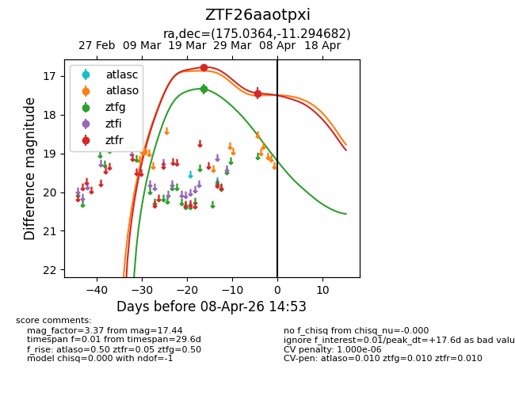
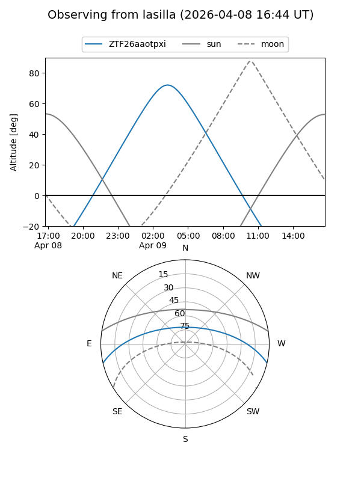
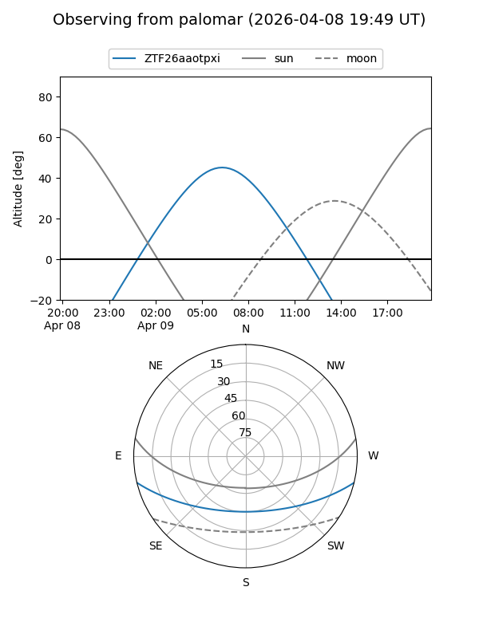
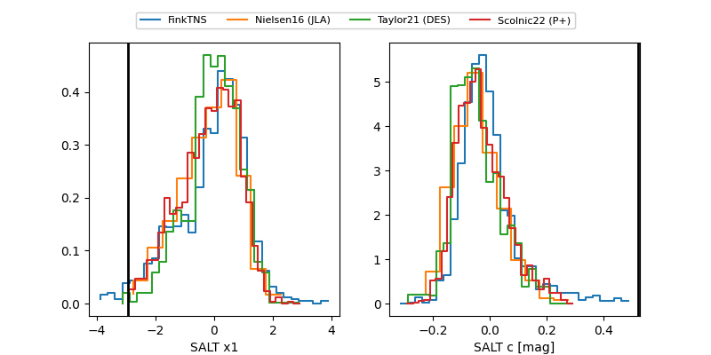

ZTF26aaotpxi
Target ZTF26aaotpxi at 2026-04-08 14:58
Aliases and brokers:
FINK: link
Lasair: link
ALeRCE: link
alt names
ZTF26aaotpxi (ztf,fink_ztf)
Coordinates:
equatorial (ra, dec) = 175.0364,-11.29468
equatorial (HMS+DMS) = 11:40:08.74,-11:17:40.86
galactic (l, b) = (276.3554,+47.86432)
Flags:
likely cv
Photometry:
last atlaso=18.95, ztfg=17.34, ztfr=17.44
1 atlaso, 1 ztfg, 2 ztfr detections
Lightcurve

Visibility


Additional plots
